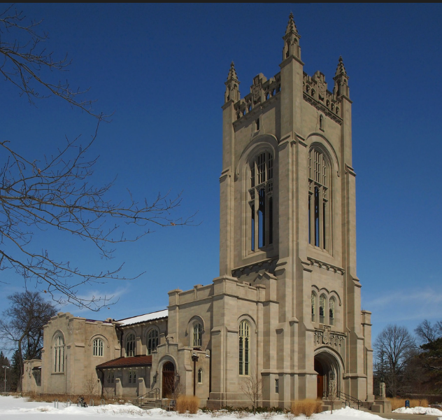
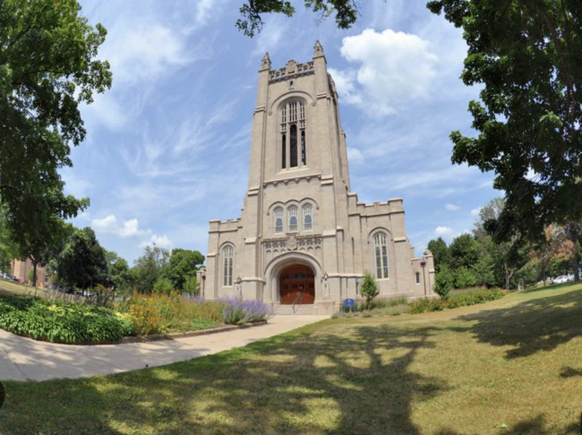

The Skinner Memorial Chapel was constructed in 1916 by architects Patton, Holmes, and Flinn. The Chapel is based on English Late Gothic architecture, and looks distinct from the other collegiate gothic buildings made during the period. The chapel continues to look distinct from the other buildings on campus, which is an intentional juxtaposition to emphasize its importance as a religious and cultural space.

Early Late Gothic architecture emphasizes perpendicular, rectilinear style. The stained glass windows are a beautiful aesthetic choice. The Chapel belongs to the “Cowling” era.

Check out this video of the chapel’s renovation in 2015! (scroll down that page)